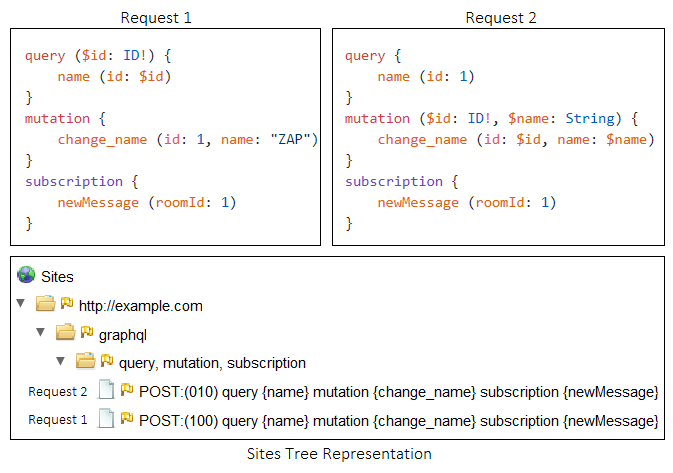

GraphQL バリアント
GraphQLバリアントは、以下の2つの役割を担っています：
- サイトツリーにGraphQLリクエストのノードを正しく表示すること。
- GraphQLクエリにペイロードを注入できるようにすること (アクティブスキャン入力ベクターのサポート)。
以下のセクションでは、これらの各機能について少し詳しく説明します。
サイトツリーにおける表現
ZAPを介してプロキシされた一意のGraphQLリクエストは、サイトツリーに表示されます。
同じオペレーションを持つリクエストは、共通のノードの下に配置されます。
同じフィールドを持つ2つのクエリは、同じノードで表現されます。
唯一の例外は、クエリがインライン引数と変数の両方を使用して送信される場合です。
この場合、それらを区別するために、それぞれ『0』または『1』のプレフィックスが付加されます。
たとえば、次の図は、2つのリクエストがサイトツリーでどのように表現されるかを示しています。

アクティブスキャンの入力ベクトル
ZAPを介してプロキシされたすべてのクエリで、インライン引数に値が注入されます。
クエリが変数を使用している場合、変数はインライン引数として置き換えられ、変数定義は削除されます。
リクエストがJSONとして送信される場合、組み込みのJSON入力ベクターハンドラーも (無効化されていない限り) 機能します。
関連情報